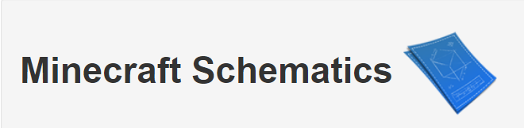
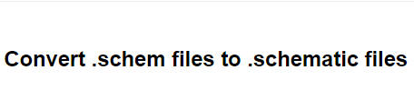
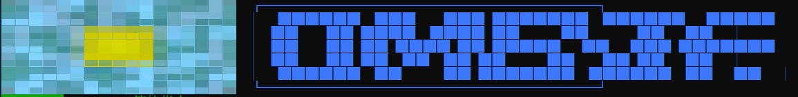

Minecraft Schematics

我的世界Schematics工程图资源下载站。该站点已收录14000+工程图文件，是寻找建筑文件的最佳姿势
Amulet Map Editor
一款高版本地图编辑器，支持编辑《我的世界基岩版》《我的世界java版》存档、输出存档为schem文件，高版本方块近似输出为schematic文件
（提示：输出schem文件可能需要消耗大量内存，同时该软件需要使用显卡。存档版本不高于1.13建议输出schematic，同配置下该格式将会节省40%-80%的计算时间）
SchemToSchematic

通过将schem文件中的高版本方块替换为空气的方式转换为低版本schematic（提示：omega现已支持schem工程图，omega用户请使用schem！对于chrome内核浏览器转换文件大于1M可能会卡死浏览器，请使用单线程浏览器如火狐浏览器）
PlanetMinecraft
全球知名的《我的世界》社区，拥有海量的社区资源，个人性化定制资源的最佳去处。（提示：大型地图输出工程图需要大量算力，使用家用电脑输出工程图可能会以天为单位计数。推荐输出schem大小不高于2000*2000*200。如有特殊需求建议寻求专业建议）
PhoenixBuilder
PhoenixBuilder前往github仓库，获取新版本PhoenixBuilder（提示：在启动参数中添加“ -O”以启用omega）
Omega Windows启动器

omega启动器， 拥有有群服互通配置能力同时可以自动重启omega